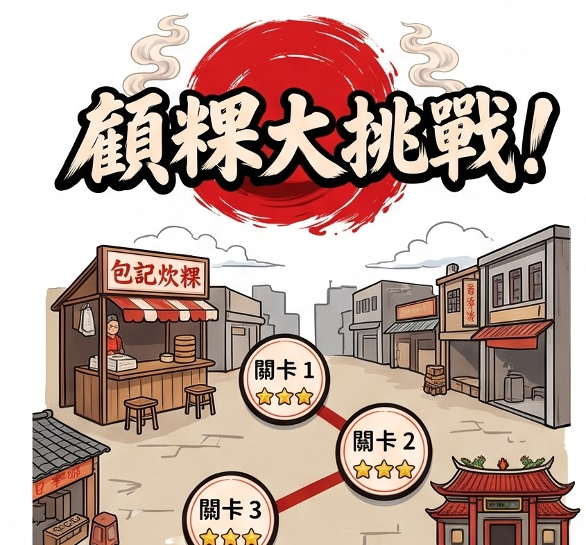

✨ 全新 2.5D 等距斜角整合廚房場景（點擊直接開玩）
♨️ 升級蒸籠 ⚡ Lv.1
加快竹蒸籠炊熟速度，並減緩外鍋乾燒缺水速度
🔥 加強火力 🔥 Lv.1
加快大鐵鑊糊化速度、延長柴火燃燒時間並降低燒焦速度
👟 升級跑鞋＆發財車 Lv.1
提升 2.5D 角色移動/衝刺速度，並大幅提高每籠菜頭粿出貨得分
🏆 炊粿職人排行榜
刷新最高分登頂全服第一！
得分：
0
/ 1200
✋ 手持：空手
⚡ 連擊：x1
📣 即時排行追擊
「用 WASD 或點擊地板在廚房裡走動操作！」
✚

⭐⭐⭐ 三星大豐收